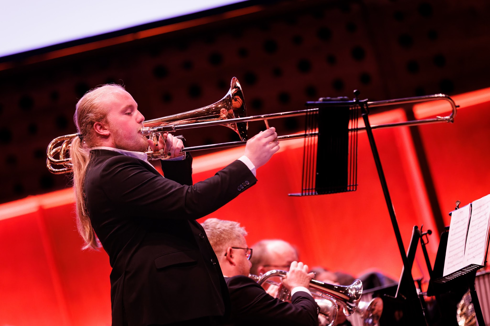

Project Overview:
Each family has their own traditions in some form. In my case, it was playing music, which originated from my parents meeting at a music conservatory.
At 8 years old, I was forced to choose an instrument of choice and play it until a certain age. I started off with the trombone, with the goal of going lower over time. Unlike the rest of my family, I was a man of bass.
As of writing this, I play at 2 orchestras, including the National Youth Fanfare Orchestra (NJFO).
Of course, playing at orchestras is fun and all, but I had different ideas when it comes to music. Less playing, more composing. A mind overflowing with ideas for custom-made music.
So i started using FL studio on a trial mode. I quickly got the ropes, but was limited by trial mode not allowing you to save, meaning I would need to make the music in single sessions.
Thus, I bought a license to give myself all the time in the world to express my love for music. I started off with composing orchestral music, but as time passed, my taste for music shifted more towards hardcore and uptempo songs. This made me start to experiment by collecting over 2500 hardcore kicks and samples, testing what would work best with my experience.
I mostly compose either a form of hardcore, or completely cinematic music. Two of these include but are not limited to:
While Pyroclasm was a high-effort song purely made for fun, Desolation has the goal of appearing inside the project of a friend. As polished as each song sounds, they're simply experimentation.
Whether it's for implementing in games or simply for the joy of listening to it, this musician's mind never rests, always brewing up new ideas to turn into music.